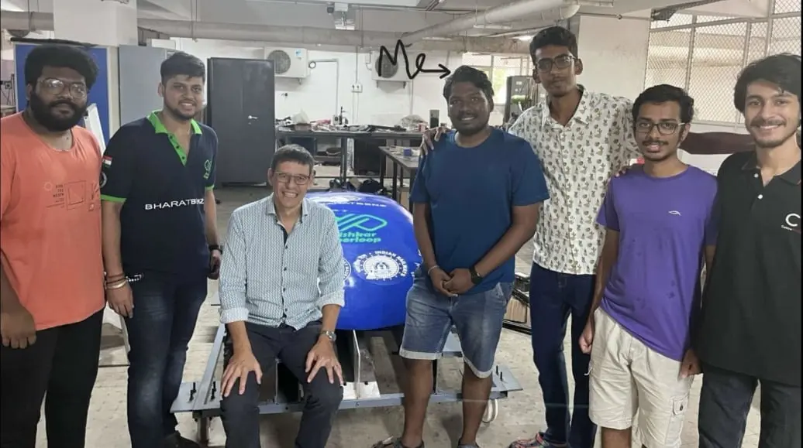

Meeting a Nobel laureate is a once-in-a-lifetime opportunity, and I consider myself extremely fortunate to have had the chance to meet Didier Queloz, the 2019 Nobel Prize winner in Physics. This remarkable encounter occurred when he was invited to lecture at IIT Madras. After the captivating lecture, his curiosity led him to express a keen interest in exploring the Centre for Innovation (CFI).
Dr. Queloz's curiosity led him to the workspace of Team Avishkar Hyperloop at CFI, where I had the privilege of engaging in a meaningful conversation with him. Despite his expertise in astronomy, his genuine enthusiasm for grasping the intricacies of hyperloop technology left a profound impression on me. Witnessing his relentless curiosity and openness to new ideas is a tremendous source of inspiration.
The Centre for Innovation (CFI) at IIT Madras dates back to 2008, with generous funding from the Class of 1981. This dynamic hub houses many competition teams and student-run clubs, fostering innovation and collaboration across disciplines.

With Prof. Didier Queloz at the Centre for Innovation, IIT Madras